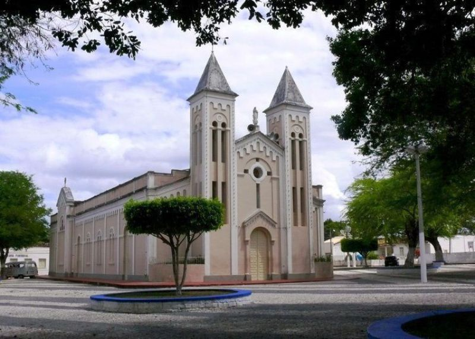

Arauá
História
Por carta de sesmaria de 5 de maio de 1596, em favor de Sebastião de Brito e Francisco Soares, foram doadas aos mesmos terras ao sul do rio Piauí, aí instalando-se com fazenda de gado, cultivo de cana e engenho de açúcar, daí por que são considerados os primeiros desbravadores da região.
Pelo meiado do século XIX, num vasto taboleiro circundado por engenhos de açúcar, entre os rios Limoeiro e Arauá, território pertencente ao Município de Estância, instalaram-se em sítios alguns moradores. A prosperidade do lugar e influência dos senhores de engenho da região foram suficientes para criar ali mesmo, para comunidade, condições de vida econômica, social e política, tendo sido o referido agrupamento demográfico batizado por Arraial da Parida, por ficar à margem de um riacho do mesmo nome.
Pela Resolução 510, de 22 de junho de 1858 foi criado o Distrito de Paz da povoação. Por iniciativa de Joaquim José de Gois, José Felix do Nascimento e Tiburcio Manoel do Nascimento, foi construído na povoação o seu templo católico, cuja freguesia foi criada pela Lei nº 815, de 30 de abril de 1868, sob o orago de Nossa Senhora da Conceição de Arauá, mudando também o topônimo da povoação para Arauá.
A resolução nº 848, de 9 de abril de 1870, elevou a povoação à categoria de Vila, desmembrando-a do Município de Estância.
fonte: https://cidades.ibge.gov.br/brasil/se/araua/historico/Pontos Turísticos
Igreja de Nossa Senhora da Conceição da Parida
Projetado e executado por Manoel Ribeiro, segundo o professor José Anderson do Nascimento que descreve com bastante clareza o altar da Igreja de Arauá em sua obra “Sergipe e seus Monumentos”: Na Vila de Arauá, ergueu-se uma igreja que tem por Orago Nossa Senhora da Conceição em taipa e telhas desse primitivo templo, remanesce seu expressivo altar-mór considerado como exemplar valioso da arte Sacra em Sergipe Del Rei. A igreja preserva o mesmo local original desde a sua construção, apenas passou por uma grande reforma entre 1925 até 1941 de acordo com dados encontrados nos livros de tombo da Igreja Matriz Nossa Senhora da Conceição.
Dados Gerais de acordo com o IBGE
| Prefeito (a) | Fabio Manoel Andrade Costa |
| Vice-Prefeito (a) | Antônio Bernardo Ferreira Lima |
| Site do município | https://araua.se.gov.br/ |
| Área territorial | 192,723 km² |
| População estimada | 9.947 pessoas |
| Densidade demográfica | 51,6 hab/km² |
| IDHM | 0,595 |
| PIB per capita | R$ 4.749,72 |